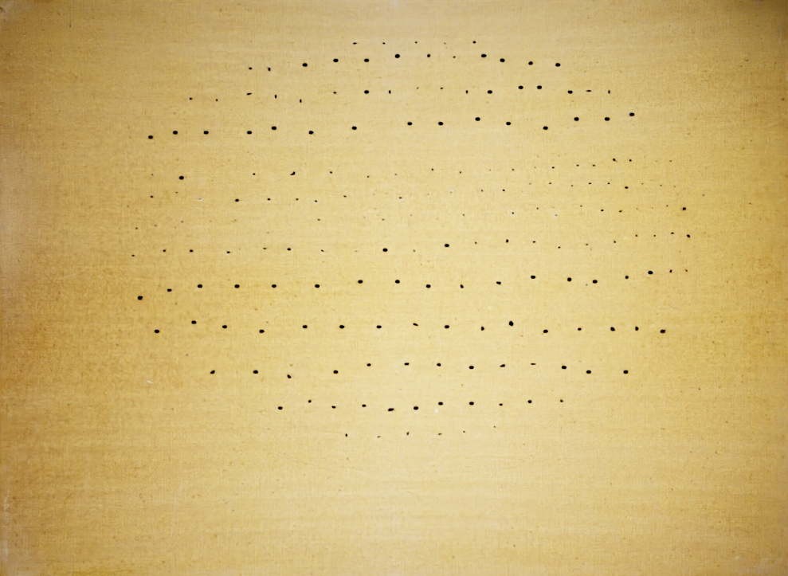
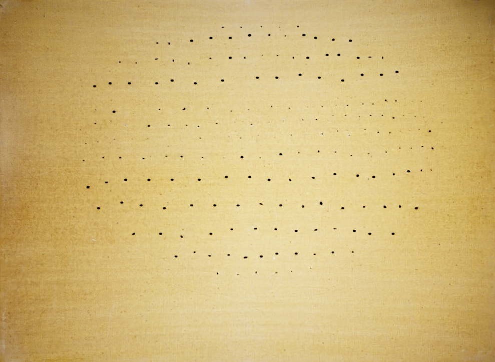

4

2 min. di lettura
Nella prima metà degli anni '50 arrivano i primi veri Concetti Spaziali, nei quadri di Fontana infatti iniziano a comparire dei piccoli fori, i Buchi, che abbinati a pietre incastonate creano complesse nebulose di luce, ombra e colore.
I buchi sono per Fontana dei tentativi di trapassare la tela, trapassare la materia rompendo i confini tradizionali della pittura e generando uno spazio pittorico tridimensionale dove il fronte e il retro del quadro vengono uniti in un unico spazio.
In questo ciclo le opere sono caratterizzate da costellazioni di "buchi", ottenuti forando la superficie della tela.

Questa serie, per Fontana, inizia nel 1949 e viene portata avanti con continuità anche negli anni successivi. I primi lavori presentano vortici di buchi; dal '50 in poi i vortici lasciano spazio a buchi organizzati in base a sequenze ritmiche più regolari. I "Buchi" hanno un'origine prettamente "spaziale" e nascono nel momento più vivo e profondo di questa ricerca. Ma il loro significato va ben oltre l'essere elementi puramente grafici sulla tela, in quanto sono considerati vere e proprie aperture verso uno spazio ulteriore.
In questo ciclo le opere sono caratterizzate da costellazioni di "buchi", ottenuti forando la superficie della tela.

Concetto Spaziale, 1956
Questa serie, per Fontana, inizia nel 1949 e viene portata avanti con continuità anche negli anni successivi. I primi lavori presentano vortici di buchi; dal '50 in poi i vortici lasciano spazio a buchi organizzati in base a sequenze ritmiche più regolari. I "Buchi" hanno un'origine prettamente "spaziale" e nascono nel momento più vivo e profondo di questa ricerca. Ma il loro significato va ben oltre l'essere elementi puramente grafici sulla tela, in quanto sono considerati vere e proprie aperture verso uno spazio ulteriore.